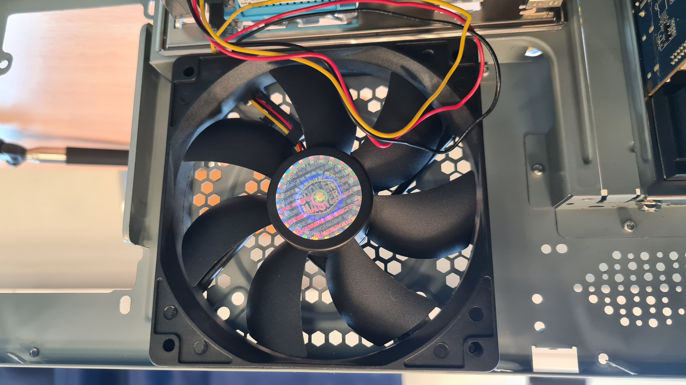
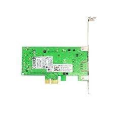

Datordelars Uppgift
En dator består av flera viktiga komponenter som arbetar tillsammans för att utföra olika uppgifter. Här är en förklaring av varje del och dess funktion i datorn.
Moderkort
Moderkortet är datorns huvudsakliga kretskort. Alla andra komponenter ansluts till moderkortet, vilket gör det till basen för datorn. Moderkortet innehåller socklar för CPU, RAM, och andra komponenter, samt olika portar för externa anslutningar.

CPU (Central Processing Unit)
CPU, eller Central Processing Unit, är datorns hjärna. Den utför de flesta beräkningarna och instruktionerna som datorn behöver för att fungera. Ju kraftfullare CPU, desto snabbare och effektivare kan datorn hantera uppgifter.

RAM (Random Access Memory)
RAM, eller Random Access Memory, är datorns korttidsminne. Det används för att lagra data som datorn snabbt behöver komma åt medan den arbetar. Mer RAM innebär att datorn kan hantera fler program samtidigt utan att bli långsam.

Strömförsörjning (PSU)
PSU, eller Power Supply Unit, ger ström till alla komponenter i datorn. Den omvandlar ström från vägguttaget till lämpliga spänningar för datorns olika delar. En tillräckligt kraftfull PSU är avgörande för att alla komponenter ska fungera korrekt.

Grafikkort (GPU)
GPU, eller Graphics Processing Unit, hanterar all grafik och bildbehandling i datorn. Det är särskilt viktigt för spel och andra grafikkrävande applikationer. En kraftfull GPU kan förbättra datorns prestanda avsevärt när det gäller grafik.

Lagring
Lagring är där all data i datorn sparas permanent. Det finns två huvudtyper av lagringsenheter: Hårddiskar (HDD) och Solid State Drives (SSD). HDDs är billigare och har större kapacitet, medan SSDs är snabbare och mer pålitliga.

Kylning
Kylning är viktigt för att förhindra att datorns komponenter överhettas. Detta kan inkludera fläktar, kylflänsar och ibland vätskekylning. Korrekt kylning hjälper till att hålla datorn i gott skick och förlänger dess livslängd.
Datorlåda
Datorlådan (eller chassit) är den fysiska strukturen som håller alla komponenter på plats. Det skyddar dem från damm och skador, och kan även bidra till kylningen genom att ha plats för fläktar och andra kylsystem.

Nätverkskort
Nätverkskort (eller NIC) gör att datorn kan ansluta till internet och andra nätverk. Det kan vara integrerat i moderkortet eller som ett separat tilläggskort.
